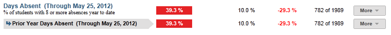
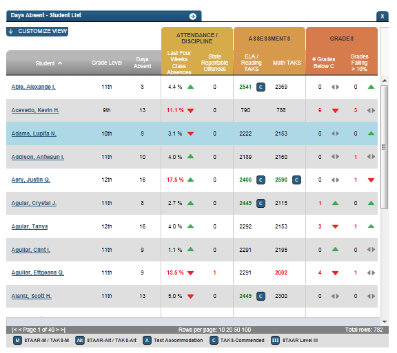
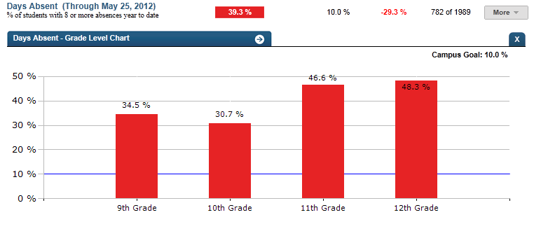
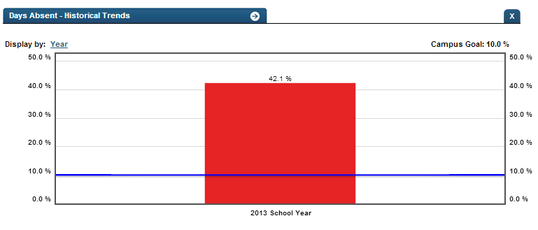

Dashboard Metrics


Days Absent
Background
Campus Metric
Days absent is a metric requested by many users nationally. Users want to be able to see the cumulative number of days a student has been absent and a breakdown of excused vs. unexcused absences. In many districts, a student acquiring their tenth unexcused absence for the year triggers a variety of actions from teachers and administrators. This metric will display the percentage of students with 8 or more absences year to date on the campus.
Primary Metric
Days Absent: The percentage of students with 8 or more absences year to date.
User Interface

Ed-Fi Dashboard Example for Campus Days
Absent
The description should read ‘% of students with eight or more absences year to date’
ToolTips
The standard tool tips for the metric definition, column headers, and help functions display for this metric. The footnote should follow the same rules as the daily attendance metric. Any students without attendance data or homerooms should be footnoted.
Business Rules
Calculation
The number of days absent is a simple calculation the percentage of students who have 8 or more absences year to date over the number of students with attendance data for the campus. The default goal is 10%.
Days absent is a simple percentage of the students with eight or more total absences year to date.
Calculated Values
Days absent = number of students with eight or more absences year to date/the total number of students with attendance data for the campus
Data Anomalies
Data Anomalies
Currently there is no way to account for students who withdraw and re-enroll. The attendance metrics account for attendance from the most recent enrollment date. Detail views will show a more complete history.
The denominator for attendance metrics is not dynamic. If a student enters school later than the first day, he is considered present for the entire time he missed.
Early education and Pre-kindergarten students that have attendance data will be included in the days absent campus rollup; the denominator of included students may be larger than average daily attendance on campuses with these students.
The days absent drilldown will only show the breakdown of days absent for grading periods that have ended. Thus the year to date number may be slightly higher than the total of the absences in the grading periods if the student has been absent in the current grading period. The year to date number will be the most current number and is updated with nightly loads.
Footnotes
Footnotes are used to provide addition data information concerning the metric. Footnotes are sequential for the entire page. Therefore, a metric's footnote may not begin with the number 1.
The following footnotes appear below the metric:
Best practice is to footnote students transferring in that have not been present for a full time frame.
Metrics are sensitive to when and how often the data is loaded.
Late enrollees are likely to be missing tardy data.
Date of Refresh
Best practice is for the date of last data refresh to appear next the metric in the following format:
(Through April 22, 2010)
Drill Downs
The following Drilldown options should be available at the campus level:
- Student List: should be a student list with the standard columns of the students with eight or more absences. The metric value should display the number of absences that the student has.

Ed-Fi Student list Drilldown
- Grade level: A breakdown of the percentage of student with eight or more absences year to date by grade level

Ed-Fi Grade Level Drilldown
- Historical: The current year’s percentage displayed as well as prior year. The time options should only be for by year.

Ed-Fi Historical Drilldown
Items to be addressed when applicable:
- Attendance should be calculated at the student level